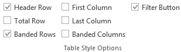

Write to a worksheet and format as an Excel table. Use wb_add_data_table() in new code.
Usage
write_datatable(
wb,
sheet,
x,
dims = wb_dims(start_row, start_col),
start_col = 1,
start_row = 1,
col_names = TRUE,
row_names = FALSE,
table_style = "TableStyleLight9",
table_name = NULL,
with_filter = TRUE,
sep = ", ",
first_column = FALSE,
last_column = FALSE,
banded_rows = TRUE,
banded_cols = FALSE,
apply_cell_style = TRUE,
remove_cell_style = FALSE,
na.strings = na_strings(),
inline_strings = TRUE,
...
)Arguments
- wb
A Workbook object containing a worksheet.
- sheet
The worksheet to write to. Can be the worksheet index or name.
- x
A data frame
- dims
Spreadsheet cell range that will determine
start_colandstart_row: "A1", "A1:B2", "A:B"- start_col
A vector specifying the starting column to write
xto.- start_row
A vector specifying the starting row to write
xto.- col_names
If
TRUE, column names ofxare written.- row_names
If
TRUE, the row names ofxare written.- table_style
Any table style name or "none" (see
vignette("openxlsx2_style_manual"))- table_name
Name of table in workbook. The table name must be unique.
- with_filter
If
TRUE, columns with have filters in the first row.- sep
Only applies to list columns. The separator used to collapse list columns to a character vector e.g.
sapply(x$list_column, paste, collapse = sep).
The below options correspond to Excel table options:
- first_column
logical. If
TRUE, the first column is bold.- last_column
logical. If
TRUE, the last column is bold.- banded_rows
logical. If
TRUE, rows are color banded.- banded_cols
logical. If
TRUE, the columns are color banded.- apply_cell_style
Should we write cell styles to the workbook
- remove_cell_style
keep the cell style?
- na.strings
Value used for replacing
NAvalues fromx. Defaultna_strings()uses the special#N/Avalue within the workbook.- inline_strings
write characters as inline strings
- ...
additional arguments
Details
The columns of x with class Date/POSIXt, currency, accounting, hyperlink,
percentage are automatically styled as dates, currency, accounting, hyperlinks,
percentages respectively.
The string "_openxlsx_NA" is reserved for openxlsx2. If x contains this
string, the output will be broken.
Examples
## see package vignettes for further examples.
#####################################################################################
## Create Workbook object and add worksheets
wb <- wb_workbook()
wb$add_worksheet("S1")
wb$add_worksheet("S2")
wb$add_worksheet("S3")
#####################################################################################
## -- write data.frame as an Excel table with column filters
## -- default table style is "TableStyleMedium2"
wb$add_data_table("S1", x = iris)
wb$add_data_table("S2",
x = mtcars, dims = c("B3"), row_names = TRUE,
table_style = "TableStyleLight9"
)
df <- data.frame(
"Date" = Sys.Date() - 0:19,
"T" = TRUE, "F" = FALSE,
"Time" = Sys.time() - 0:19 * 60 * 60,
"Cash" = paste("$", 1:20), "Cash2" = 31:50,
"hLink" = "https://CRAN.R-project.org/",
"Percentage" = seq(0, 1, length.out = 20),
"TinyNumbers" = runif(20) / 1E9, stringsAsFactors = FALSE
)
## openxlsx will apply default Excel styling for these classes
class(df$Cash) <- c(class(df$Cash), "currency")
class(df$Cash2) <- c(class(df$Cash2), "accounting")
class(df$hLink) <- "hyperlink"
class(df$Percentage) <- c(class(df$Percentage), "percentage")
class(df$TinyNumbers) <- c(class(df$TinyNumbers), "scientific")
wb$add_data_table("S3", x = df, start_row = 4, row_names = TRUE, table_style = "TableStyleMedium9")
#####################################################################################
## Additional Header Styling and remove column filters
write_datatable(wb,
sheet = 1,
x = iris,
start_col = 7,
with_filter = FALSE,
first_column = TRUE,
last_column = TRUE,
banded_rows = TRUE,
banded_cols = TRUE
)
#> A Workbook object.
#>
#> Worksheets:
#> Sheets: S1 S2 S3
#> Write order: 1, 2, 3
#####################################################################################
## Pre-defined table styles gallery
wb <- wb_workbook(paste0("tableStylesGallery.xlsx"))
wb$add_worksheet("Style Samples")
for (i in 1:21) {
style <- paste0("TableStyleLight", i)
write_datatable(wb,
x = data.frame(style), sheet = 1,
table_style = style, start_row = 1, start_col = i * 3 - 2
)
}
for (i in 1:28) {
style <- paste0("TableStyleMedium", i)
write_datatable(wb,
x = data.frame(style), sheet = 1,
table_style = style, start_row = 4, start_col = i * 3 - 2
)
}
for (i in 1:11) {
style <- paste0("TableStyleDark", i)
write_datatable(wb,
x = data.frame(style), sheet = 1,
table_style = style, start_row = 7, start_col = i * 3 - 2
)
}